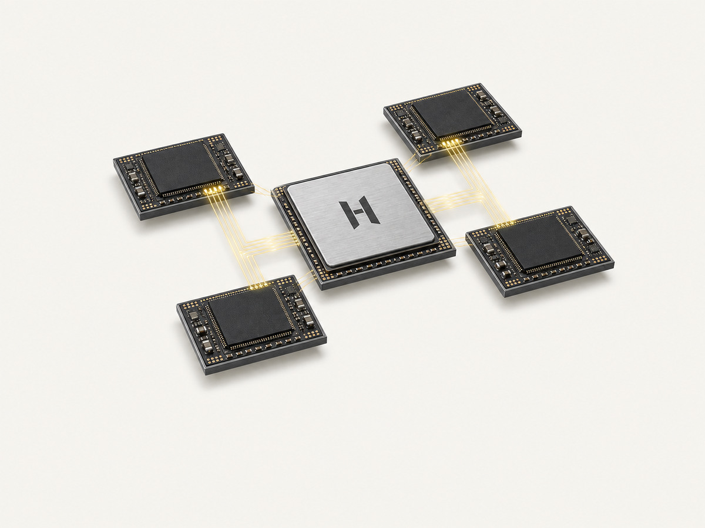
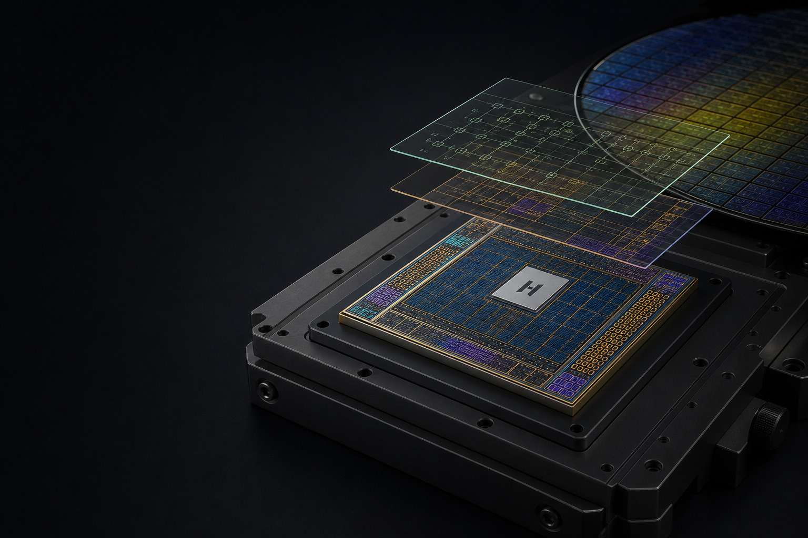
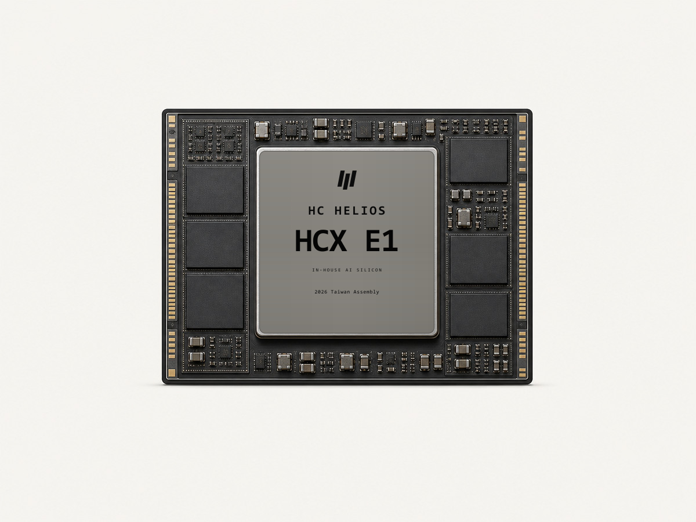
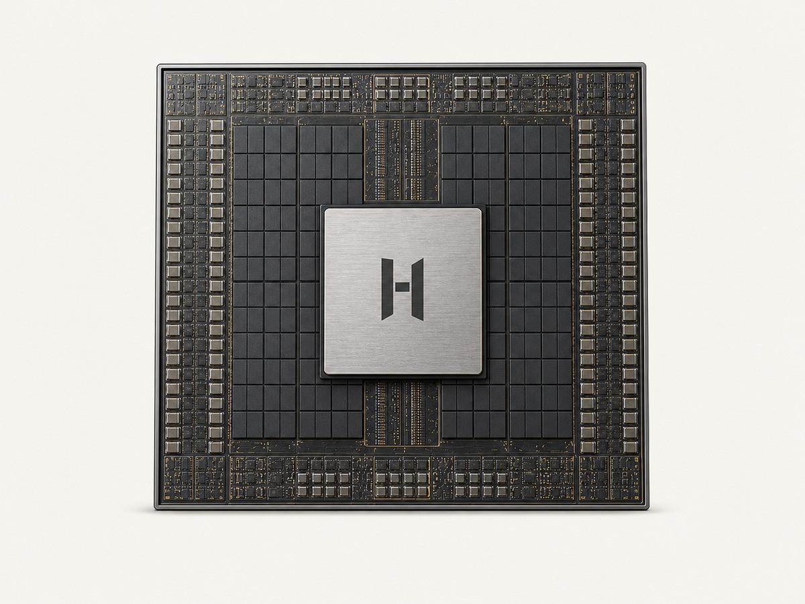

HCX C1
Composable chiplet computeModular dies, advanced packaging and unified fabric for configurable compute.
- Decoupled compute and I/O dies
- High-bandwidth in-package fabric
- Composable designs across system scales

HELIOS / HOLYCORES AI SILICON
An in-house foundation spanning compute cores, on-chip memory, dataflow, fabric and software interfaces for datacenter and edge AI.
HOLYCORES starts with real models and deployment constraints, co-designing compute cores, memory hierarchy, data movement, package fabric, compiler and runtime into one evolvable foundation. The objective is useful compute, programmability, efficiency and system scale—not unverified peak numbers.
PLANNED SILICON PORTFOLIO

Modular dies, advanced packaging and unified fabric for configurable compute.

Inference, control and high-speed I/O for robotics, vision and field intelligence.

Scalable compute for model inference, fine-tuning and dense server platforms.
COMPUTE ARCHITECTURE
Tensor, vector and scalar resources support mainstream operators and custom kernels.
Local stores, shared cache and external memory paths reduce unnecessary movement.
Low-latency movement reflects operator dependencies, parallelism and scale-out patterns.
Isolation, scheduling and telemetry support multi-model and multi-tenant operation.
Silicon definition considers on-chip SRAM, external memory, host interfaces, die-to-die links and advanced packaging together. Bandwidth, capacity, latency, power and manufacturability must be validated within one system boundary.
Keep highly reused data close to execution.
Plan for weights, KV cache and intermediate activations.
Connect in-package, board-level and system-level movement.
HARDWARE / SOFTWARE CO-DESIGN
ENGINEERING EVIDENCE
Workload characterization, performance modeling and power estimation.
Functional and formal verification, timing, power and testability.
Characterization, packaging, board, stability and reliability validation.
Accuracy, performance, scaling, compatibility and endurance testing.
FAQ
This page describes in-house R&D directions and planning boundaries. Tape-out, production, availability and final specifications will be announced as engineering matures.
Silicon is the compute foundation. NOVA and SPARK package that capability into datacenter accelerators and edge products.
Bring target models, baselines, deployment conditions and success criteria to define an evaluation path together.
START WITH A REAL WORKLOAD